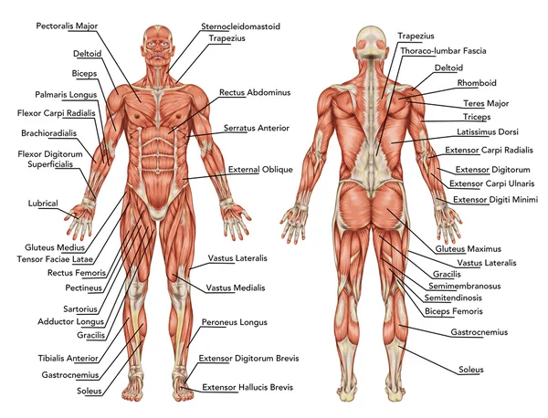

Анатомія
Анатомія - це наука про будову організмів. Вона вивчає структуру органів, тканин та систем організму. На цій сторінці розглянемо основні системи тіла людини та будову рослин.
Анатомія людини
Людський організм складається з різних систем:
- Кістково-м'язова система: забезпечує підтримку, захист органів і рух.
- Серцево-судинна система: транспортує кров, кисень і поживні речовини по всьому тілу.
- Дихальна система: забезпечує газообмін між повітрям і кров’ю.
- Травна система: переробляє їжу та всмоктує поживні речовини.
- Нервова система: координує діяльність усіх органів та відповідає за сприйняття.
Основні органи
Кожна система складається з органів, що працюють разом:
- Мозок – керує мисленням, пам'яттю та рухами.
- Серце – перекачує кров по судинах.
- Легені – несуть кисень у кров і видаляють вуглекислий газ.
- Печінка – очищує кров і перетворює поживні речовини.
Анатомія рослин
Рослини мають власну будову, що відрізняється від тварин:
- Корінь: поглинає воду та мінерали, фіксує рослину у ґрунті.
- Стебло: підтримує рослину і переносить воду та органічні речовини.
- Листя: здійснює фотосинтез і виробляє поживні речовини.
- Квітка: відповідає за розмноження та утворення насіння.
